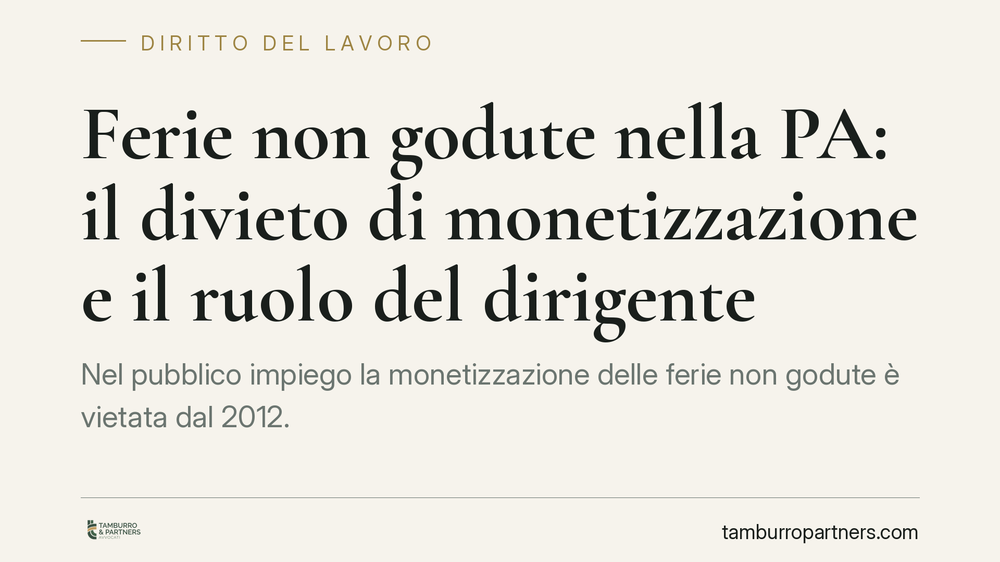

Ferie non godute nella PA: il divieto di monetizzazione e il ruolo del dirigente
Nel pubblico impiego la monetizzazione delle ferie non godute è vietata dal 2012. Ma la giurisprudenza europea e nazionale ha progressivamente delimitato il divieto, valorizzando il ruolo del datore nel favorire la fruizione. Vediamo cosa prevede la norma, come la leggono i giudici e quali cautele gestionali spettano oggi alle amministrazioni e ai loro dirigenti.

Il quadro normativo: il divieto introdotto nel 2012
Il punto di partenza è l'art. 5, comma 8, del d.l. 6 luglio 2012 n. 95 (convertito con modificazioni dalla l. 7 agosto 2012 n. 135, la cosiddetta *spending review*). La norma stabilisce che le ferie, i riposi e i permessi spettanti al personale delle pubbliche amministrazioni "sono obbligatoriamente fruiti secondo quanto previsto dai rispettivi ordinamenti e non danno luogo in nessun caso alla corresponsione di trattamenti economici sostitutivi".
Il legislatore ha quindi vietato in via generale la *monetizzazione*, cioè il pagamento di un'indennità in luogo delle ferie non godute. Lo stesso comma precisa che la disposizione si applica anche in caso di cessazione del rapporto di lavoro per mobilità, dimissioni, risoluzione, pensionamento e raggiungimento dei limiti di età. Restano fuori, secondo la lettura consolidata, le ipotesi in cui la mancata fruizione non sia imputabile alla volontà del dipendente.
L'incidenza del diritto dell'Unione
Il divieto nazionale non opera in modo assoluto. La Corte di giustizia dell'Unione europea, con le sentenze Max-Planck (C-684/16) e Kreuziger (C-619/16), entrambe del 6 novembre 2018, ha affermato un principio destinato a incidere sulla gestione del personale: il lavoratore non perde automaticamente il diritto alle ferie maturate e non godute, né la relativa indennità alla cessazione, se il datore di lavoro non ha diligentemente messo il dipendente in condizione di fruirne.
In sostanza, secondo la Corte, grava sul datore l'onere di invitare formalmente il lavoratore a godere delle ferie e di informarlo che, in caso contrario, queste potrebbero andare perse. Se l'amministrazione non prova di aver adempiuto a questo onere, la mancata fruizione non è imputabile al dipendente e il diritto all'indennità sostitutiva non si estingue.
La lettura della giurisprudenza nazionale
La giurisprudenza interna ha recepito progressivamente questo orientamento. La Corte di cassazione ha riconosciuto il diritto all'indennità per ferie non godute quando la mancata fruizione dipenda da cause non riconducibili alla scelta del lavoratore (ad esempio esigenze di servizio o malattia). La Corte dei conti, dal canto suo, ha mantenuto una posizione rigorosa sul divieto di monetizzazione, sottolineando il profilo di responsabilità erariale, pur ammettendo le eccezioni collegate alla cessazione non programmabile del rapporto.
Resta rilevante distinguere tra ferie in senso stretto e altri istituti di riposo, e tra personale dirigenziale e comparto. Sul dirigente grava una responsabilità organizzativa più marcata nella programmazione dei congedi del personale assegnato; sul dirigente stesso, poi, la mancata fruizione delle proprie ferie è stata talora letta con minore indulgenza, data la sua autonomia nella gestione del tempo di lavoro.
Implicazioni pratiche per gli enti
Il messaggio operativo è chiaro: la tenuta del divieto di monetizzazione, sul piano del contenzioso, dipende sempre più dal comportamento tenuto dall'amministrazione durante il rapporto. Un ente che non pianifica la fruizione delle ferie e non documenta gli inviti rivolti al personale si espone al rischio di dover corrispondere l'indennità alla cessazione, con il relativo profilo di responsabilità per chi avrebbe dovuto vigilare.
Si tratta, prima ancora che di un tema giuridico, di un tema gestionale: la prova della diligenza datoriale si costruisce nel tempo, con atti scritti e tracciabili, non all'avvicinarsi della cessazione del rapporto.
Cosa fare in concreto
- Monitorare periodicamente il residuo ferie di ciascun dipendente, con reportistica almeno semestrale.
- Invitare per iscritto il personale a fruire delle ferie maturate, indicando le conseguenze della mancata fruizione entro i termini.
- Conservare la documentazione degli inviti e delle eventuali ragioni di servizio che ne impediscono il godimento.
- Distinguere nella gestione le posizioni dirigenziali da quelle del comparto, calibrando gli adempimenti.
- Richiedere una verifica legale preventiva nei casi di cessazione con residui significativi, prima di negare l'indennità.
Disclaimer
Contributo informativo a cura di Tamburro & Partners - Avv. Giuseppe Tamburro. Non costituisce parere legale.
Ogni storia di lavoro ha i suoi tempi.
Se gestisci HR e vuoi un confronto su contenzioso, ispezioni o licenziamenti, scrivi allo studio. Ti rispondiamo entro un giorno lavorativo.